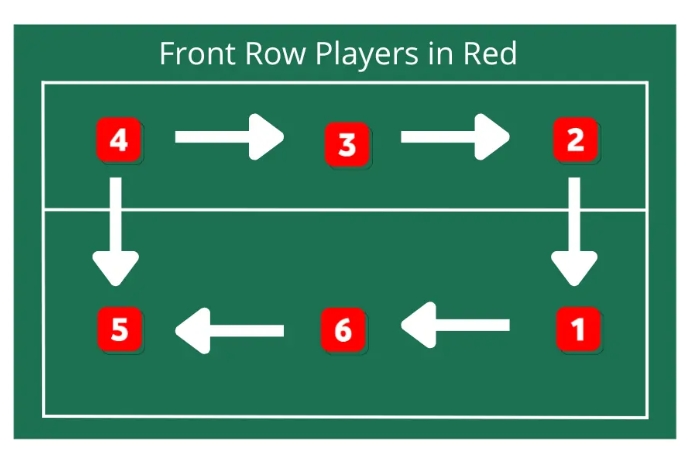
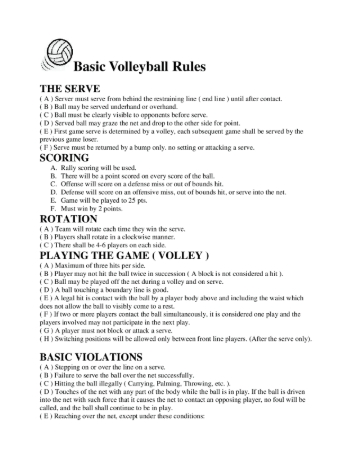

Rotation
The basic rotation of volleyball is easy. There is the backline and the frontline,
with a line called the "10 foot line" seperating the two. There are three in the front,
and three in the back, for a total of 6 people on one side of the court at a time
(a total of 12 people on the court). The back right of your side of the court is the server,
and it is generally accepted that, in beginner volleyball, the front middle person is the setter.
You rotate in a clockwise fashion, and if you have more than 6 people trying to play, then you must
have them sit out and rotate into the servers position. Those who rotate out with rotate out
when they leave the front left position (in the picture, it would be position 2), if and only if you have substitutes.
There are more complex rotations to volleyball, but this is a most basic rotation that everyone can easily do.

Rules
The basic rules of volleyball are as follows:
volleyball, which are that there can only be 6 players on the court per
team, for a total of 12 on the court as a whole. Second, the team that
wins the point, which can be done a multitude of ways including the ball
hitting the ground of the opposing team’s side of the court, or if the
opposing team hits it out, will serve next. Third, even if the ball
touches the net, or if you touch it on a block, you may hit it back up.
Next, if the ball hits the boundary line of the court, it is considered
in, and the team that the ball will get the point. Also, no matter what
part of the body hits the player, it will count no matter what, so long
as there is only one touch to count. If the player touches the ball two,
three, or more times, it will be the opposing team’s point. Next, when
hitting the ball, you must not contact it for more than half a second,
which basically means don’t hold or carry the ball. If you do, it will
be the opposing teams point. Next, when serving the ball, you must serve
the ball from the very back of the designated court boundary. If you
serve it in front of the line, that is illegal and will be the other
team’s point. Next, before the serve your team must be in position
(rotation after each point given going in a clockwise manner), but after
the serve, your team is allowed to rotate wherever they’d like. However,
if your position is considered as a backline then you cannot jump above
the net to attack, or rather at all. If you do, the point will be given
to the opposing team. Lastly, if you intend to play volleyball in a
competitive manner, the games are done in typically a best of three or a
best of five format, with twenty five points to win. However, if the
score Is twenty-five to twenty-four, the teams must win by two. Meaning,
just because the team hit twenty-five points, they must get to
twenty-six (in this case) if they want to win. There are a lot more "niche"
rules to volleyball, but these are the most basic rules to understand.